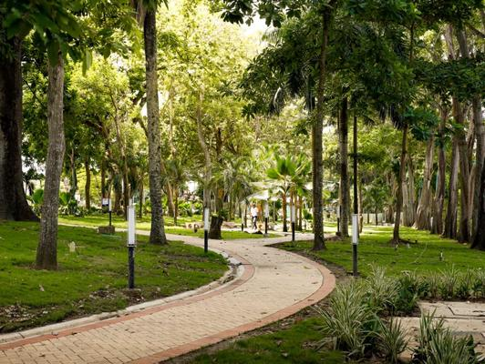
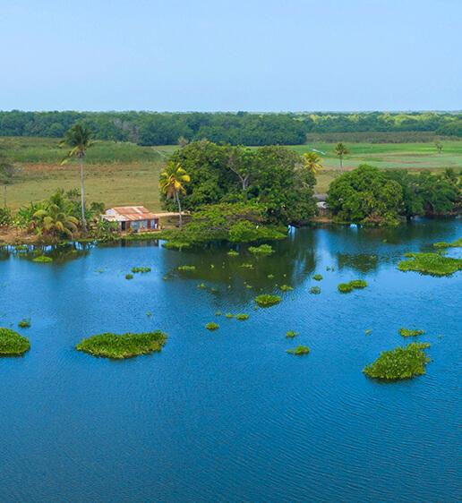

Jornadas Ecológicas
Participa en acciones de impacto real en tu zona
Reforestación

Reforestación Río Sinú
18 de Marzo, 2026
Montería, Córdoba
450 / 1000 voluntarios
Limpieza

Limpieza Ribera Sinú
25 de Marzo, 2026
San Bernardo del Viento
320 / 600 voluntarios
Monitoreo

Monitoreo Fauna Humedales
01 de Abril, 2026
Cispata, Córdoba
180 / 400 voluntarios